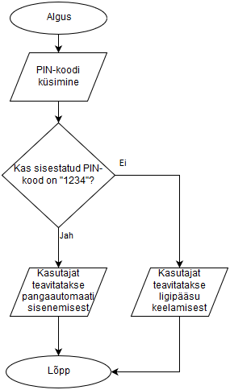

Mis on voodiagramm (Flowchart)?
Vooskeem on graafiline joonis, mis näitab samm-sammult kuidas mingi protsess, algoritm või programm
töötab (järjekorda ja otsuseid). Vooskeemi kasutatakse algoritmide planeerimiseks, programmi loogika selgitamiseks,
äriprotsesside kirjeldamiseks ja vigade leidmiseks enne päriselt koodi kirjutamist.
Kus kasutatakse vooskeeme?
Vooskeeme kasutatakse paljudes valdkondades, kus on vaja kirjeldada protsessi, otsuste loogikat või tegevuste
järjekorda:
- tarkvaraarendus
- meditsiin
- haridus/teadus
- ärianalüüs/äriprotsessid
- projektijuhtimine
Vooskeemi osad:
Vooskeemi kujutatakse standardsete graafiliste sümbolitega(ANSI/ISO), millest igaühel on kindel tähendus.
- ovaal - protsessi algus või lõpp
- ristkülik - mingi tegevus või käsk (nt "arvuta summa!")
- romb - otsus, tingimus, millel on harud (nt jah/ei)
- rööpkülik - sisend/väljund, andmete sisestamine või tulemuse väljastamine
- nooled(voojooned) - näitavad tegevuse suunda
- väike ring või pentagon - ühendaja (connector), ühendab skeemi eri osi
- silinder - andmehoidla, andmebaas või fail
Näide skeemist:

Vooskeem (wikipedia)